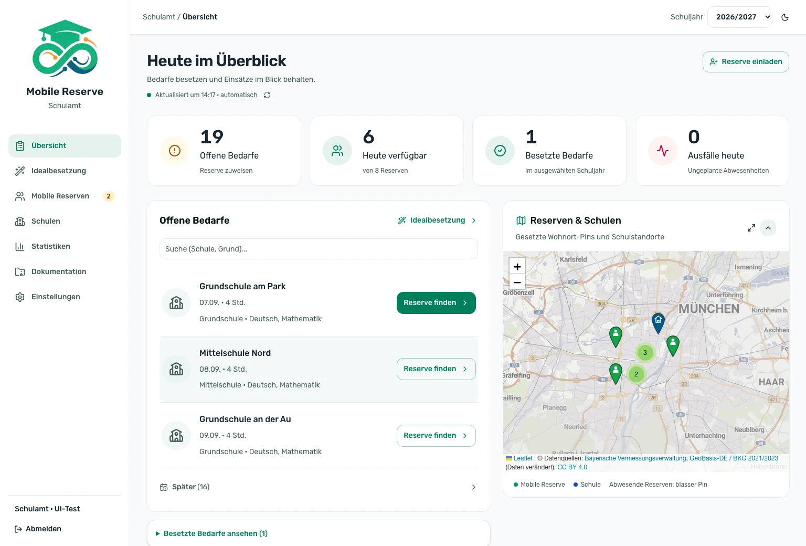
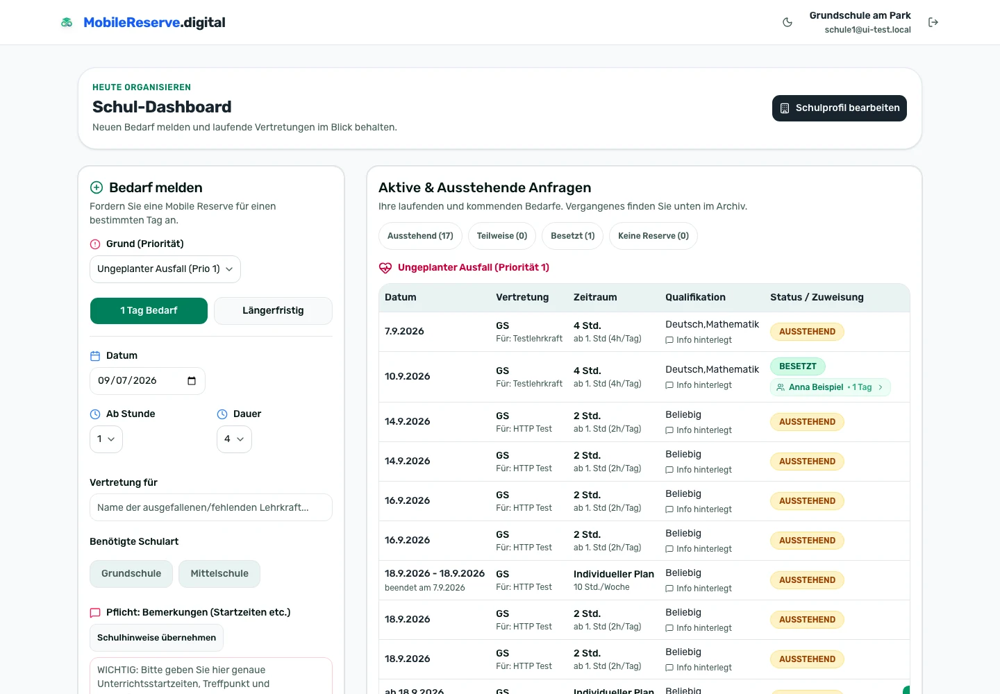
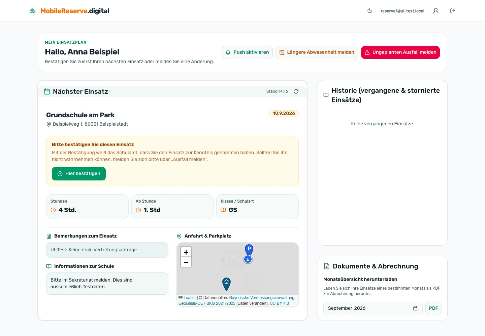
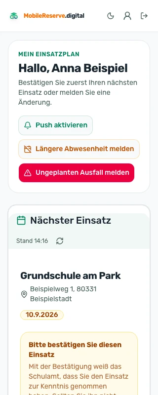

Für staatliche Schulämter
Schulen melden ihren Bedarf, das Schulamt findet die passende Lehrkraft und weist zu, die Lehrkraft bestätigt. Jeder Einsatz ist dokumentiert und abrechenbar.
Auf Ihrem eigenen Server · Quelloffen (AGPL-3.0) · Ohne Cloud-Zwang

Wer ist frei, wer ist qualifiziert, wer wohnt nah genug? Die Antwort steckt in Köpfen und Notizzetteln.
Parallel gepflegte Tabellen laufen auseinander, sobald sich eine Zuweisung ändert.
Am Monatsende muss rekonstruiert werden, wer wann wo im Einsatz war — für jede Lehrkraft einzeln.
Drei Rollen, ein System
Getrennte Zugänge für Schule, Schulamt und Lehrkraft — mit Zugriff ausschließlich auf die eigenen Daten.

Meldet Bedarf in unter einer Minute: Datum, Stunden, Schulart, Pflichthinweise für den Einsatztag. Sieht anschließend, wer kommt — samt Qualifikation, Telefonnummer und ob bereits bestätigt wurde.
Sieht alle Bedarfe der eigenen Schulen, bekommt bewertete Vorschläge und weist mit einem Klick zu. Karte, Statistiken, Monatsabrechnung und Datensicherung inklusive.

Sieht den nächsten Einsatz mit Anfahrt, Hinweisen der Schule und Ansprechpartner — und bestätigt ihn mit einem Fingertipp. Ein Ausfall lässt sich direkt melden.
Das Herzstück
Jede Lehrkraft wird für den konkreten Bedarf bewertet und sortiert. Die Entscheidung bleibt beim Schulamt, die Vorarbeit übernimmt das System.

Unterwegs
Die Anwendung lässt sich auf dem Startbildschirm ablegen und verhält sich wie eine App — ohne Installation aus einem Store.
Datenschutz
Personenbezogene Angaben werden nicht auf Zuruf gelöscht, sondern nach festen Fristen — automatisch und nachweisbar.
| Frist | Was geschieht | Betrifft |
|---|---|---|
| 30 Tage | Klarnamen werden unkenntlich gemacht | Name der vertretenen Lehrkraft, Bemerkungsfeld |
| 30 Tage | Freitext der Ausfallmeldung wird gelöscht | Begründung einer Krankmeldung |
| 400 Tage | Datensatz wird vollständig entfernt | Einsätze, Anforderungen, Abwesenheiten |
Jeder erfolgreiche Durchlauf wird mit Zeitstempel und Ergebniszahlen protokolliert — für die Rechenschaftspflicht nach Art. 5 Abs. 2 DSGVO.
Der Zeitplan läuft in der Anwendung selbst und startet nach jeder Aktualisierung von allein. Kein Eintrag im Betriebssystem nötig.
Mehrere Schulämter auf einer Installation sehen ausschließlich ihre eigenen Schulen, Lehrkräfte und Anforderungen.
Die Anwendung wird auf Ihrer eigenen Infrastruktur installiert und betrieben. Datenschutzrechtlich verantwortliche Stelle im Sinne von Art. 4 Nr. 7 DSGVO ist damit die betreibende Dienststelle, nicht der Anbieter der Software. Einsatz und Nutzung erfolgen auf eigene Verantwortung; die Software wird als quelloffenes Werk unter der AGPL-3.0 ohne Gewährleistung bereitgestellt.
Unterlagen, die Sie für Ihre Dokumentation benötigen — etwa eine Beschreibung der technischen und organisatorischen Maßnahmen (TOM), Angaben für Ihr Verzeichnis von Verarbeitungstätigkeiten sowie ein Muster zur Auftragsverarbeitung — stellen wir Ihnen auf Anfrage zur Verfügung.
Betrieb
Keine Cloud, kein Abonnement, keine Datenweitergabe an Dritte. Ein Server, eine Konfigurationsdatei, zwei Container.
$ docker compose pull
$ docker compose up -d
✓ Datenbank aktualisiert
✓ Anwendung bereit
✓ Löschfristen aktivVoraussetzung: ein Server mit Docker (z. B. Debian) und eine Subdomain.
Wir richten Ihnen einen Demo-Zugang mit Musterdaten ein — unverbindlich und ohne Installation bei Ihnen.